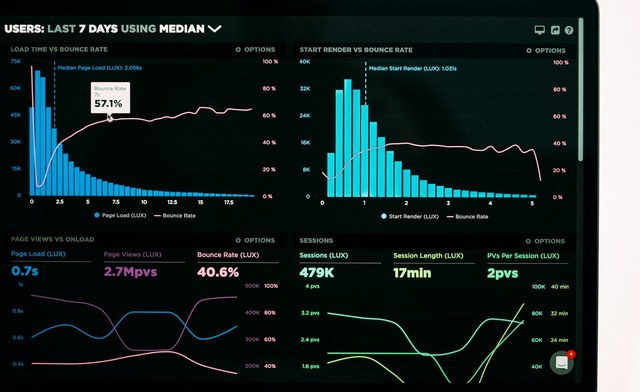

This is where I share practical insights from my work as a data analyst — techniques, tools, and lessons learned across healthcare analytics, dashboard design, and data quality.
Each post is grounded in hands-on experience, from building interactive Tableau dashboards to identifying and managing outliers in real-world datasets. My goal is to document what works in practice, for others to apply these techniques in their projects.

A walkthrough of all six Tableau action types — URL, Go to Sheet, Filter, Highlight, Set, and Parameter actions — with step-by-step setup for each.
Four practical methods for spotting outliers — sorting, visualization, Z-score, and IQR — plus when to remove them versus leave them as natural variation.